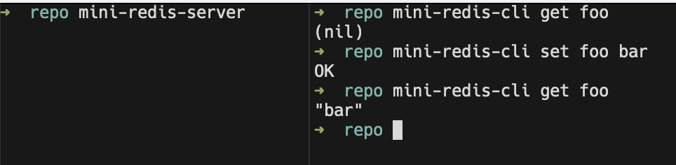
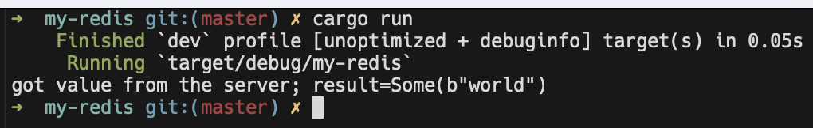

Tutorial
본 튜토리얼에서는 Tokio를 이용하여, 데이터베이스로 동작하는 Redis의 client와 server를 다뤄봅니다.
이 과정에서 asynchronous programming의 기초를 이해할 수 있고, Tokio에 대한 이해도도 높일 수 있습니다.
Setup
튜토리얼은 Mini-Redis 라는 Tokio 학습용 crate를 이용해 진행됩니다.
Mini-Redis
Mini-Redis는 아래와 같이 설치할 수 있습니다.
cargo install mini-redis
그리고 Server와 Client는 각각 아래 그림과 같이 다룰 수 있습니다. 
Hello Tokio
이번에는 아주 기초적인 Tokio Application을 만들어봅니다.
Mini-Redis Server에 연결되는 프로그램이며 아래와 같은 동작을 수행합니다.
hello라는 Key로World라는 Value를 저장함.helloKey로 정보를 read 해봄 이 과정은Mini-Redis의 Client library를 사용합니다.
The code
우선 아래와 같이 새로운 cargo 프로젝트를 생성합니다.
cargo new my-redis
cd my-redis
그리고 아래를 입력해 Cargo.toml 파일을 수정합니다.
echo 'tokio = { version = "1", features = ["full"] }
mini-redis = "0.4"' >> Cargo.toml
그리고 아래와 같이 src/main.rs를 수정합니다.
use mini_redis::{client, Result};
#[tokio::main]
async fn main() -> Result<()> {
// Open a connection to the mini-redis address.
let mut client = client::connect("127.0.0.1:6379").await?;
// Set the key "hello" with value "world"
client.set("hello", "world".into()).await?;
// Get key "hello"
let result = client.get("hello").await?;
println!("got value from the server; result={:?}", result);
Ok(())
}당연한 말이지만
Mini-Redis Server가 돌아가고 있어야 합니다.
이제 아래와 같이 실행해보면 결과를 확인할 수 있습니다.
cargo run

Breaking it down
이제 코드를 하나씩 분석해보겠습니다.
let mut client = client::connect("127.0.0.1:6379").await?;client::connect 함수는 mini-redis crate에서 왔습니다. 이는 asynchronous하게 TCP연결을 만드는데, 연결이 완료되면 반환값으로 client handle이 반환됩니다. 코드 자체만 놓고 보면 synchronous하게 코딩할 때와 같지만, await 을 사용한다는 점이 다릅니다.
asynchronous programming 이란?
대부분의 컴퓨터 프로그램들은 작성된 순서대로 코드를 따라 실행 됩니다. 첫 번째 줄이 실행되고 나면, 그 다음 줄이 실행되고 이것이 반복되는 식입니다. 따라서, 이렇게 synchronous한 프로그램들은 중간에 “연산 시간이 오래 걸리는” 코드를 만나게 되면 해당 연산이 끝날 때까지 실행 흐름이 Block됩니다. 예를 들어, TCP 연결은 3-way handshake 등과 같이 각 peer가 network상에서 정보를 주고 받는 시간이 필요합니다. 이 때 thread가 block되는 것입니다.
asynchronous 프로그램에서는 이렇게 “오래 걸리는” 코드가 background로
suspended됩니다. 즉, Thread가 Block되는 것이 아니라 다른 코드들을 실행하는 것입니다. background로 넘어갔던 코드는 실행이 완료되면unsuspended되고 실행을 재개합니다.asynchronous하게 프로그래밍을하면 더 빠른 프로그램 개발이 가능합니다. 하지만, 프로그래머는 비동기 프로그램의 실행이 완료되었을 때의 상태 추적을 잘 할 필요가 있습니다. 역사적으로, 이 부분은 매우 지루하고 또 에러가 발생하기 쉬운 프로그래밍이라고 합니다.
Compile-time green-threading
Rust 언어는 asynchronous programming을 async/await 를 이용해 구현합니다. 비동기로 동작하는 함수는 앞에 async만 붙여주면 됩니다. 위 예제 코드에서 사용한 client::connect()함수는 아래와 같이 정의되어 있습니다.
use mini_redis::Result;
use mini_redis::client::Client;
use tokio::net::ToSocketAddrs;
pub async fn connect<T: ToSocketAddrs>(addr: T) -> Result<Client> {
// ...
}async fn 으로 정의된 비동기 함수는 synchronous 함수와 크게 다르지 않아 보입니다. Rust는 compile time에 asycn fn 함수들을 asynchronous하게 동작하는 routine으로 변환합니다.
async fn 함수 안에서 .await 이 일어나면, 현재 Thread에 제어권을 넘기게 됩니다. Thread는 연산이 background에서 일어나도록 두고, 다른 작업을 진행하게 되는 것입니다.
Important
Rust 외의 다른 언어들도
async/await라는 이름으로 비동기 프로그래밍을 구현하긴 했으나, Rust는 lazy한 방식으로 이를 구현했다고 합니다.
Using async/await
async fn은 다른 Rust함수들 처럼 호출되지만, 호출되었을 때 바로 함수 body를 실행하는 것이 아닙니다.
그 대신에, async fn은 해당 operation을 대표하는 어떤 value를 반환합니다.
이는 개념적으로 zero-argument closure와 유사합니다.
실제로 operation을 실행하려면 .await을 명시해야 합니다.
아래 코드를 통해 이를 이해할 수 있습니다.
async fn say_world() {
println!("world");
}
#[tokio::main]
async fn main() {
// Calling `say_world()` does not execute the body of `say_world()`.
let op = say_world();
// This println! comes first
println!("hello");
// Calling `.await` on `op` starts executing `say_world`.
op.await;
}위 코드의 실행 결과는 아래와 같습니다.
hello
world참고로, async fn함수의 return value는 Future trait을 구현한 임의의 타입이면 됩니다.
async main function
async fn은 함수가 비동기적 맥락에서 수행되기를 원할 때 사용됩니다. 하지만, 비동기 함수는 runtime 에 의해 실행되어야 합니다.
runtime은 asynchronous task scheduler를 포함하고 evented I/O, timers 등의 기능을 제공합니다. runtime은 자동으로 시작되지 않기 때문에 main함수가 이를 직접 시작해야 합니다.
#[tokio::main] 함수는 매크로 입니다. 이는 async fn main()으로 명시된 함수를 synchronous인 fn main()으로 변환합니다. 변환된 fn main()함수는 runtime instance를 초기화하고 async main function을 실행합니다.
예를 들어, 아래와 같이 #[tokio::main]과 async fn main()을 이용해 만든 코드가 있다고 해보겠습니다.
#[tokio::main]
async fn main() {
println!("hello");
}매크로에 의해 변환된 결과는 아래와 같습니다.
fn main() {
let mut runtime = tokio::runtime::Runtime::new().unwrap();
rt.block_on(async {
println!("hello");
})
}Cargo features
Tokio로부터 사용할 기능(feature)를 cargo.toml에 명시할 수 있습니다.컴파일타임 등을 최적화하기 위해서는 필요한 기능만 추가하면 됩니다.